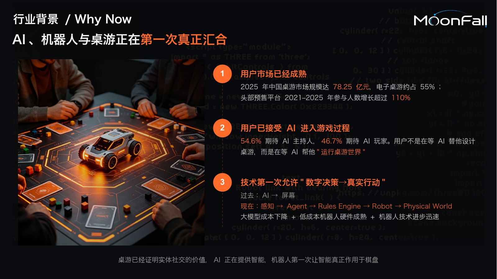
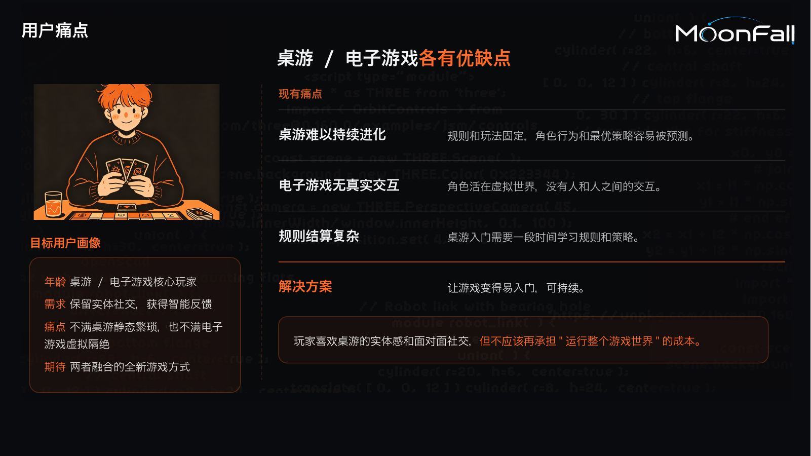
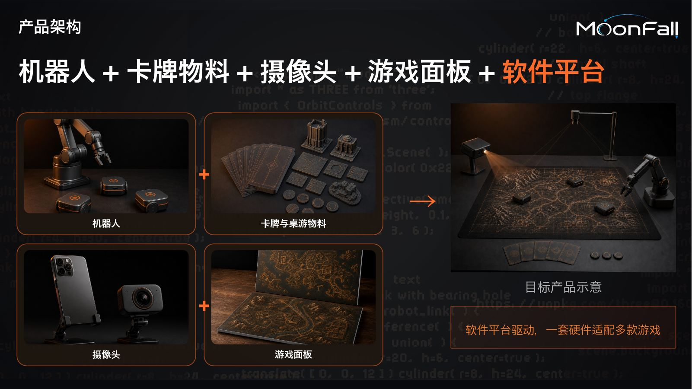
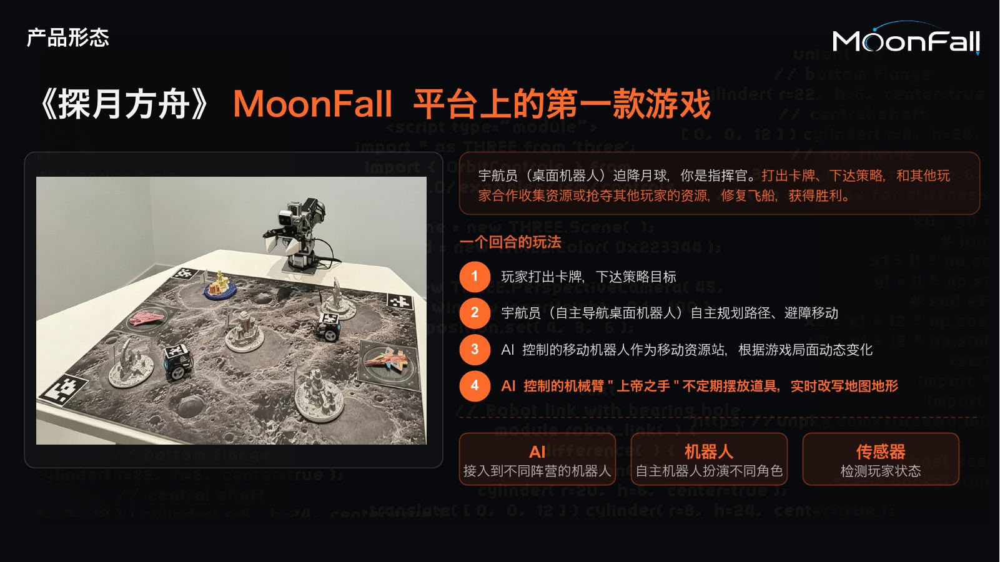
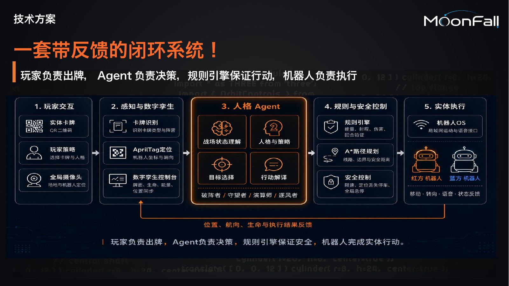
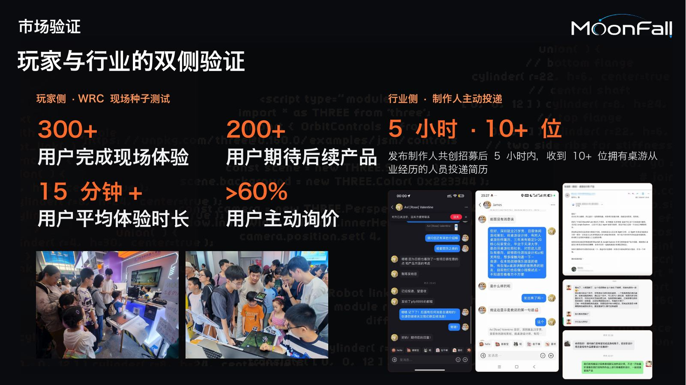
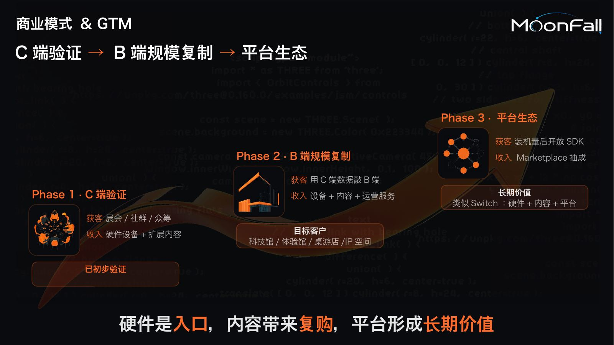
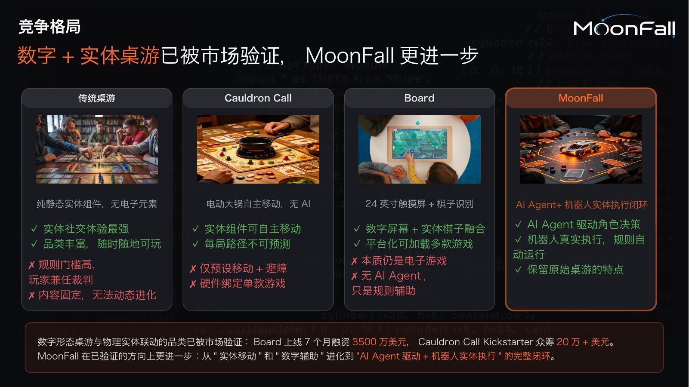
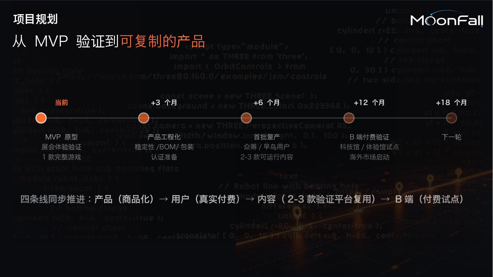
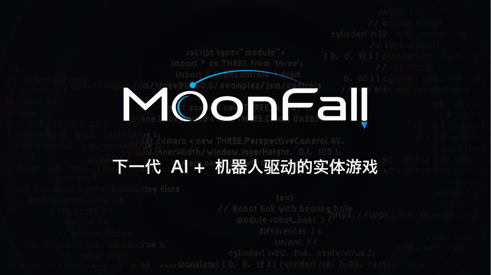

AI、机器人与桌游正在第一次真正汇合

2025 年中国桌游市场规模达 78.25 亿元，电子桌游约占 55%；头部预售平台 2021–2025 年参与人数增长超过 110%
54.6% 期待 AI 主持人，46.7% 期待 AI 玩家。用户不是在等 AI 替他设计桌游，而是在等 AI 帮他"运行桌游世界"
过去：AI → 屏幕
现在：感知 → Agent → Rules Engine → Robot → Physical World
大模型成本下降 + 低成本机器人硬件成熟 + 机器人技术进步迅速
桌游已经证明实体社交的价值，AI 正在提供智能，机器人第一次让智能真正作用于棋盘
桌游 / 电子游戏各有优缺点

年龄 桌游 / 电子游戏核心玩家
需求 保留实体社交，获得智能反馈
痛点 不满桌游静态繁琐，也不满电子游戏虚拟隔绝
期待 两者融合的全新游戏方式
桌游难以持续进化
规则和玩法固定，角色行为和最优策略容易被预测。
角色活在虚拟世界，没有人和人之间的交互。
桌游入门需要一段时间学习规则和策略。
让游戏变得易入门，可持续。
玩家喜欢桌游的实体感和面对面社交，但不应该再承担"运行整个游戏世界"的成本。
机器人+卡牌物料+摄像头+游戏面板+软件平台

卡牌与桌游物料
游戏面板
+
+
目标产品示意
软件平台驱动，一套硬件适配多款游戏
《探月方舟》MoonFall 平台上的第一款游戏

宇航员（桌面机器人）迫降月球，你是指挥官。打出卡牌、下达策略，和其他玩家合作收集资源或抢夺其他玩家的资源，修复飞船，获得胜利。
一个回合的玩法
玩家打出卡牌，下达策略目标
宇航员（自主导航桌面机器人）自主规划路径、避障移动
AI 控制的移动机器人作为移动资源站，根据游戏局面动态变化
AI 控制的机械臂"上帝之手"不定期摆放道具，实时改写地图地形
AI
接入到不同阵营的机器人
机器人
自主机器人扮演不同角色
传感器
检测玩家状态

一套带反馈的闭环系统！
玩家负责出牌，Agent负责决策，规则引擎保证行动，机器人负责执行
300+

用户完成现场体验
用户期待后续产品
用户平均体验时长
用户主动询价
玩家侧 · WRC 现场种子测试
行业侧 · 制作人主动投递
发布制作人共创招募后 5 小时内，收到 10+ 位拥有桌游从业经历的人员投递简历
C端验证 → B端规模复制 → 平台生态

Phase 1 · C端验证
收入 硬件设备+扩展内容
Phase 2 · B端规模复制
收入 设备+内容+运营服务
目标客户
科技馆/体验馆/桌游店/IP空间
Phase 3 · 平台生态
收入 Marketplace抽成
长期价值
类似Switch：硬件+内容+平台
硬件是入口，内容带来复购，平台形成长期价值
数字+实体桌游已被市场验证，MoonFall更进一步

纯静态实体组件，无电子元素
✓ 实体社交体验最强
✓ 品类丰富，随时随地可玩
✗ 规则门槛高，玩家兼任裁判
✗ 内容固定，无法动态进化
Cauldron Call
✓ 实体组件可自主移动
✓ 每局路径不可预测
✗ 仅预设移动+避障
✗ 硬件绑定单款游戏
24英寸触摸屏+棋子识别
✓ 数字屏幕+实体棋子融合
✓ 平台化可加载多款游戏
✗ 本质仍是电子游戏
✗ 无AI Agent，只是规则辅助
AI Agent+机器人实体执行闭环
✓ AI Agent驱动角色决策
✓ 机器人真实执行，规则自动运行
✓ 保留原始桌游的特点
数字形态桌游与物理实体联动的品类已被市场验证：Board上线7个月融资3500万美元，Cauldron Call Kickstarter众筹20万+美元。MoonFall在已验证的方向上更进一步：从"实体移动"和"数字辅助"进化到"AI Agent驱动+机器人实体执行"的完整闭环。
从 MVP 验证到可复制的产品

MVP 原型
展会体验验证
1款完整游戏
产品工程化
稳定性/BOM/包装
认证准备
首批量产
众筹/早鸟用户
2-3款可运行内容
B端付费验证
科技馆/体验馆试点
海外市场启动
+18 个月
四条线同步推进：产品（商品化）→ 用户（真实付费）→ 内容（2-3款验证平台复用）→ B端（付费试点）
